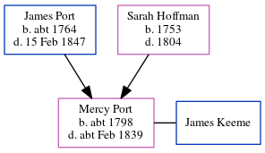

Mercy Keeme (née Port) c1798 - c1839
[ Home ] | [ Calendar ] | [ Surnames Index ] | [ Census Index ] | [ Family History ]The child of James Port and Sarah Hoffman, Mercy Port, the four times great-aunt of Nigel Horne, was born c. 1798 and baptized in Herne, Kent, England on Nov 20, 1798. She married James Keeme at St Mary The Virgin, Chislet, Kent, England on Mar 1, 18232.
She died c. Feb 1839 in Blean, Kent, England1.
Parents
- James was born c. 1764
- Sarah was born in 1753
Citations
- England & Wales deaths 1837-2007 - Findmypast
- England Marriages 1538-1973 - Findmypast
Media
England Births & Baptisms 1538-1975 - R_884938918
Kent Baptisms - GBPRS/CANT/B/96579518
England Marriages 1538-1973 - R_848155507/2
Kent marriages and banns - GBPRS/CANT/M/97093654/2
England & Wales Deaths 1837-2007 - BMD-D-1839-1-BN-000976-025
Family Tree
Generated by ged2site. Last updated on Jun 11, 2024